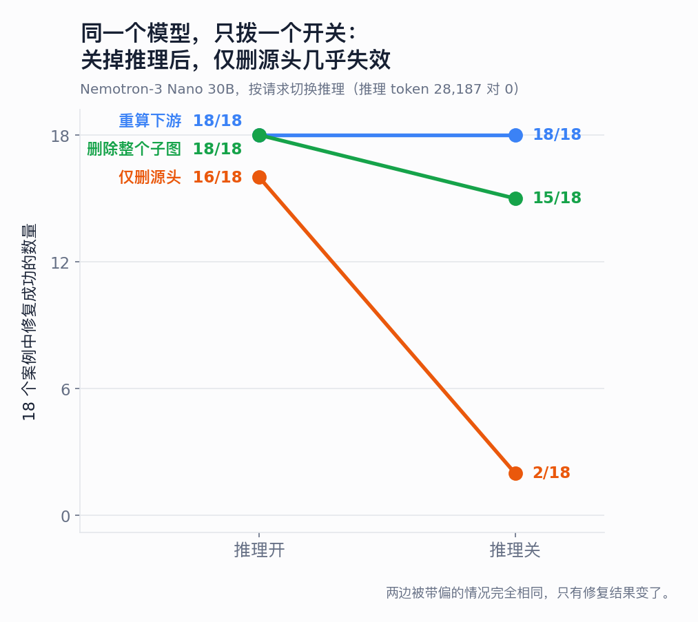

LLM 上下文修复：试点实验 v2
一个错误的事实被删掉之后，为什么还留在对话里，以及什么才能真正把它清除。
8 月 23 日更新
问题
假设一段 LLM 对话里有一条错误的更正。你把这一轮删掉，对话就修好了吗？
不一定。等到发现错误时，后面的回答可能已经重复了它、用它做了计算，并把它变成了新的论断。删掉最初的错误，改变的是源头，却不会改写从它长出来的结论。
在线性的聊天记录里，这一点很难看出来。把对话表示成依赖图，它就明显得多。
这次试点直接测量这一效应，依次回答五个问题：
- 污染的上下文是否真的会把答案带偏？污染的类型有没有影响？
- 错误传播得越远（被重复一轮、两轮或三轮），修复是否越难？
- 来自四家厂商的九个端点，表现是否不同？
- 模型的推理模式会不会改变能修复的范围？
- 这与已知的长上下文性能退化有什么关系？
要点
- 无关的插话从未带偏模型，自信的错误论断每次都能。冲突的陈述在九个端点的 162 个模型-案例结果里全部导致最终答案错误。带有相近数字的无关插话，在 81 个结果里一次也没有导致错误。在这里污染上下文的是冲突，不是噪音。
- 错误一旦被重复，只删源头就不够了。删除整条受污染的线索，修复了 162 个被带偏结果中的 162 个。让模型重写受影响的轮次，修复了 161 个。只删除最初那条错误消息，修复了 152 个；来自三家不同厂商的端点，从残留的轮次里重建出了一模一样的错误数字。
- 在一个受控端点上，推理模式明显影响了低成本的修复。按请求关掉推理后，仅删源头的修复从 16/18 跌到 2/18，完整重写在两边都保持满分。模型是否被带偏，则完全没有变化。
- 在这九个端点的样本里，修复能力的差异与模型规模和厂商都不对应。一个 9B 模型拿了满分，同系列的 30B 模型却没有做到；随传播深度变差的弱点只出现在一个混合专家（MoE）变体上，它的稠密（dense）同系列模型没有。
一个受控示例
每个案例都是一个只有一个可验证答案的短任务，所以评分用精确匹配，不需要任何 LLM 来评判。在旗舰案例里，原以为四个箱子各装 30 个零件，一次核实过的复点把它更正为 24，另有 11 个散件在箱子外：
随后，一条自信但错误的轮次把数字改回 30，好像复点才是错的。后面的轮次重复这个错误数字并用它计算：4 × 30 = 120，然后 120 + 11 = 131，最后再复述一遍过时的中间值。最终问题总是用固定的输入要一个数字，而所有被测模型都相信了这条错误更正，回答 131。

五种图状态
要回答的是：撤销这个错误需要做什么。每段对话有五个版本：一个没有错误的干净版本（显示模型本来会怎么回答）、被污染的版本，以及三种修复。每种修复都是用户真实可做的编辑：
- 只删除那条错误消息。重复它的轮次保留。（仅删源头。）
- 删除错误消息，以及所有重复它的轮次。（删除子图。）
- 删除错误消息，并让模型自己重写受影响的轮次。（重算下游。）
| 条件 | 呈现的上下文 | 检验什么 |
|---|---|---|
| 干净 | 核实过的数值和干净的中间轮次 | 模型到底能不能解这道题？ |
| 污染 | 虚假推翻，加上受污染的下游轮次 | 错误会不会改变答案？ |
| 仅删源头 | 删掉虚假推翻，保留下游轮次 | 只删源头够不够？ |
| 删除子图 | 虚假推翻和下游轮次都删掉 | 彻底切除能否恢复答案？ |
| 重算下游 | 删掉虚假推翻，按依赖顺序重新生成下游轮次 | 这条思路能否被修好，而不是丢掉？ |
在前四个条件里，受污染的下游轮次对所有模型都是固定的。只有重算条件让每个模型自己重新生成它们。这样就把「对同一段错误历史的敏感度」和「重建它的能力」分开了。
旗舰结果
九个模型端点都在温度 0、服务商默认推理设置下测试。在这一个案例上，所有模型在五种图状态中的四种上一致，只在一种上出现分歧。
| 图状态 | 九个端点的结果 |
|---|---|
| 干净 | 九个全部 → 107 |
| 污染 | 九个全部 → 131 |
| 仅删除源头 | 六个 → 107 · Gemma 4 26B、GPT-OSS 20B、Nemotron-3 30B Omni reasoning → 131 |
| 删除污染子图 | 九个全部 → 107 |
| 删除源头并重算下游 | 九个全部 → 107 |
这不是隐藏记忆的证据。残留的错误明明白白地留在下游陈述里。删掉一个节点，并不会自动让已经从它生成的文字失效。
整个试点的结果
试点包含 9 个任务族，传播深度为 1、2、3。每个模型跑 135 个条件。核心修复指标只统计在干净上下文下答对、污染后答错的案例。四个端点在 8 月 16 日采集；另外五个在 8 月 19 日至 22 日作为受控配对加入（见下一节）。
对上下文的敏感度高度一致，九个端点无一例外
- 干净上下文：每个模型 27/27 答对。
- 明确的错误信息：每个模型 9/9 被带偏。
- 虚假推翻一次已核实的更新：每个模型 9/9 被带偏。
- 数字相近但无关的插话：每个模型 0/9 被带偏。
来自四家厂商的九个端点，逐格复现了这个三分结果。上下文会不会带偏模型，取决于污染的类型：冲突的论断每次都奏效，无关的插话从不奏效。
修复策略很重要
| 修复操作 | 修复成功 | 修复率 |
|---|---|---|
| 删除污染子图 | 162/162 | 100% |
| 删除源头并重算下游 | 161/162 | 99.4% |
| 仅删除源头 | 152/162 | 93.8% |

九个端点上仅删源头的十次失败中，有九次发生在虚假推翻的案例里。Gemma 的深度规律最清楚：深度 1 为 6/6，深度 2 为 5/6，深度 3 为 4/6。曾经正确的过时信息是最顽固的污染：错误的回滚被删掉之后，它在后面轮次里的回声读起来就像普通的历史。

第二批受控配对
另外五个免费端点作为第二批加入。运行前登记了两个预测。一个被数据否定。另一个后来发现，以当时采集的端点无法有效检验；下面记录了这项更正，没有把它掩盖过去。
| 模型 | 仅删源头 | 按深度（k1 / k2 / k3） | 删除子图 | 重算下游 |
|---|---|---|---|---|
| GLM-4.5 Flash | 18/18 | 6 / 6 / 6 | 18/18 | 17/18 |
| Nemotron 3.5 Lightning | 18/18 | 6 / 6 / 6 | 18/18 | 18/18 |
| Gemma 4 26B (MoE) | 15/18 | 6 / 5 / 4 | 18/18 | 18/18 |
| GPT-OSS 20B | 17/18 | 6 / 6 / 5 | 18/18 | 18/18 |
| Nemotron-3 Nano 30B Omni reasoning | 14/18 | 4 / 6 / 4 | 18/18 | 18/18 |
| Nemotron-3 Nano 30B | 16/18 | 5 / 6 / 5 | 18/18 | 18/18 |
| Nemotron Nano 9B | 18/18 | 6 / 6 / 6 | 18/18 | 18/18 |
| GLM 5.2 | 18/18 | 6 / 6 / 6 | 18/18 | 18/18 |
| Gemma 4 31B (dense) | 18/18 | 6 / 6 / 6 | 18/18 | 18/18 |
一次探索性的 30B 比较，以及一项更正
登记的预测是：一个明确带推理的模型会「想清楚」受污染的回声，比不带推理的同系列模型更能抵抗它们。按当时的采集方式，这个比较检验不了这个预测，原因有两个。第一，两个端点是不同的模型，而不是同一个模型加一个开关：推理端点是 Omni 变体，带有视觉和语音编码器，它的同系列模型只处理文本。第二，两者都用服务商默认的推理设置运行，所以哪一边都没有被明确地打开或关闭推理。
这个比较剩下的，只是两个同厂商、规模相近的端点之间的一个探索性观察：仅删源头时 14/18 对 16/18。因为两个端点不同，而且两边都是服务商默认推理，它分离不出任何单一因素。
在一个受控端点上，推理模式明显影响了仅删源头的修复
有效的实验在 8 月 21 日进行：一个只处理文本的模型（Nemotron-3 Nano 30B），把完整的 135 个条件跑两遍，按请求明确切换推理。开关在运行前用探针验证过，运行后又逐一核查了每一次采集到的调用：打开时共 28,187 个推理 token，关闭时恰好为零。
| 推理开 | 推理关 | |
|---|---|---|
| 干净准确率 | 27/27 | 27/27 |
| 被带偏（错误信息 / 虚假推翻 / 干扰插话） | 9/9 · 9/9 · 0/9 | 9/9 · 9/9 · 0/9 |
| 仅删除源头 | 16/18 | 2/18 |
| 删除污染子图 | 18/18 | 15/18 |
| 删除源头并重算下游 | 18/18 | 18/18 |

三点观察，每一点都只针对这个端点。第一，登记的预测通过了有效检验：关掉报告中的推理模式后，仅删源头的修复从 16/18 跌到 2/18。第二，被带偏的情况没有变化：两边的三分污染结果完全相同。推理模式改变的是这个模型能从什么中恢复，而不是它会不会被带偏。第三，没有推理时，修复策略的排序变了：重算保持满分 18/18，删除子图下滑到 15/18，仅删源头大多失败。删除子图的失败很能说明问题：受污染的轮次被切除后，上下文是干净了，但中间步骤也没了，模型只能从光秃秃的输入重新计算，结果算错（其中一次失败直接把 96 和 9 拼成了 969）。删除恢复的是干净，不是已经做过的计算；重算两者都能恢复。
这有多确定？两边共享同样的 18 个被带偏案例，所以首选的检验是配对检验。在 18 个配对结果中，推理开修好了 14 个推理关没修好的案例，反过来的情况一次也没有出现；精确双侧 McNemar 检验 p = 1.22 × 10⁻⁴。在预先登记的任务族层面，六个冲突类任务族全部偏向推理开，双侧符号检验 p = .031。另有两点说明：删除子图上的差异（18/18 对 15/18，三个不一致的配对全部同向）在这个样本上统计上无法区分（精确 McNemar p = 0.25），所以我们对此不下结论。另外，每个条件只在温度 0 下跑了一次，所以没有估计解码层面的波动。
这也解释了之前的困惑。第二批里那个「不带推理」的端点，在服务商默认设置下其实一直在推理（验证探针里有 97 个推理 token），所以那次无效的比较指向了错误的方向。
修复的稳健性不取决于规模
第二个登记的预测是：一个 9B 模型会跌破干净准确率的上限，并表现出更弱的修复能力。两者都没有发生：Nemotron Nano 9B 在干净条件下 27/27 答对，在每种策略下都修好了所有被带偏的案例，这个满分连它的 30B 同系列模型都没有做到。在这个九端点的便利样本里，修复能力的差异与模型规模和厂商都不对应；抵抗力看起来是每个模型各自的特性。
代际配对与架构配对为第二批收尾
GLM-5.2 是 GLM-4.5 Flash 的同厂商代际配对，它在每种策略下都修好了所有被带偏的案例。Gemma 4 31B dense 是 26B 混合专家模型的同厂商架构配对，同样拿了满分。第二个结果回答了一个登记过的问题：26B MoE 在仅删源头时随深度递减的规律（6/6，然后 5/6，然后 4/6），没有出现在它的稠密同系列模型上。一对模型不足以确立架构上的原因，但在这个系列里，随深度变差的脆弱性只属于 MoE 变体。
在实践中意味着什么
适用于任何在累积上下文上运行 LLM 的场景：聊天产品、Agent 流水线、面向文档的 AI 助手、受监管环境中的长期助手。
- 删掉一条错误消息，并不能清理整段对话。任何引用过它、在它基础上推进的内容，都会继续带着这个错误。把一次更正当作删除受影响的整段，而不是出错的那一行。
- 当历史很重要时，优先重新生成，而不是删除。即使在测试过的最弱配置里，重写下游轮次也修好了每一个案例。删除上下文也会删掉已经做过的工作；中间步骤一旦没了，小模型从光秃秃的输入开始会算错。
- 对快速、不带推理的模式要格外小心。在我们做过消融的那一个配置里，关掉推理后，低成本的修复几乎每次都失败。如果成本或延迟迫使你用快速模式，应计划清理整段或重算，而不是只删一处。
- 过时的真相是最糟的污染物。修复失败集中在曾经正确的数值上。价格、限额、配置这类随版本变化的数据，值得在上下文里加上明确的「已被取代」标记。
这个结果说明了什么
1. 对话里的错误会变成状态
一个错误数值一旦被用在后续的计算和总结里，这些下游内容就各自成了错误的独立载体。
2. 移除证据与修复后果是两种不同的操作
删掉错误源头，改变的是应该相信什么，不一定改变后面的轮次已经说了什么。
3. 重新计算必须遵循依赖顺序
子节点不应在它过时的父节点之前重新生成。ThoughtDAG 把这些依赖记录为边，并从上游到下游依次重放过时的节点。
4. 图本身就是一种实验干预
在 ThoughtDAG 里，一条边决定哪些上游节点进入下一次请求。编辑一条连线会改变序列化后的上下文，因此删减和重放是可以检验的操作，而不只是视觉上的比喻。
是干扰，不是容量：与长上下文性能退化的关系
另一条研究线表明，单是输入长度就会损害模型：Chroma 的 Context Rot 研究 ↗测得 18 个前沿模型的准确率远在达到宣称的窗口之前就出现了不均匀的下降；NoLiMa ↗发现 12 个模型中有 11 个在 32K token 时已跌到其短上下文表现的一半以下（RULER ↗用合成检索任务做了同样的「宣称长度与有效长度」之分）。
这次试点刻意站在这条分界的另一边。按服务商的计量，没有任何一次请求超过 720 个输入 token，也没有任何一个条件的累计输入超过 1.7K token，远低于被测模型的上下文窗口，所以从设计上就排除了容量压力。把这些模型带偏的，是一段原本很短的上下文里的一句冲突的话：是语义干扰，不是长度。两种失效方式互为补充，也很容易混为一谈；计划中的下一步是加入一个按 token 数匹配的中性填充对照（长度相同，没有冲突），在同样的任务族里把两者分开。
两套分类也能对应起来。Context Rot 相关工作区分了投毒（错误通过上下文自我复制）、分心和混淆；我们的三种污染算子（明确的错误信息、虚假推翻、数字相近的插话）用精确匹配评分探查的是同一片领域。我们的「分心」对应项在这些长度下从未奏效（九个端点全部 0/9），这与「无关内容主要在上下文变长时才造成损害」的看法一致。
这次试点没有证明什么
这不是这九个端点的通用排名。端点组是免费档的便利样本，任务是合成的、符号化的，并且只有英文，不能代表真实研究对话的完整分布。每个条件只在温度 0 下跑了一次，所以没有估计解码层面的波动；除消融实验外，服务商默认的推理设置也没有统一。服务商没有返回模型版本或系统指纹，所以免费端点可能随时间漂移。各模型之间一两个案例的修复差异落在单次运行的噪声范围内；真正的发现是跨模型的规律（三分的带偏结果、修复策略的层级、失败类型的集中），而不是每个模型的分数。
这次试点不揭示模型为什么生成某个 token，不测量隐藏的推理，也不表明每一段真实的研究对话都能从手动编辑图中获益。
它确立的是一个更窄的结论：在受控的多轮任务中，一个错误论断在其源头轮次被删除后，仍可能继续影响 LLM，因为它已经传播到了下游对话里。删除受污染的下游内容，或按依赖顺序重新生成它们，比只删除源头更可靠地修复了这些残留的上下文。
复现与核查
基准存储了图案例、精确的序列化请求、响应、用量、声明式评分，以及可以导入 ThoughtDAG 的画布。
ThoughtDAG 是用来可视化和复现这些干预的参考实现，它不是实验的结论。